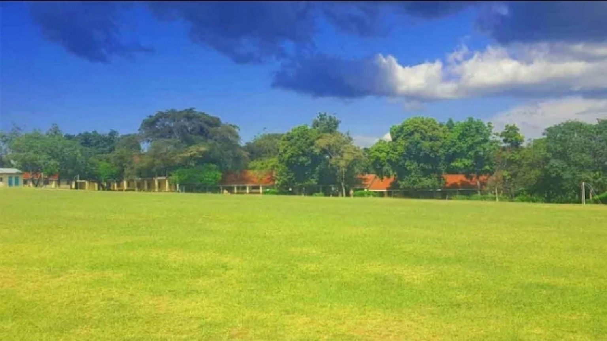

◆
Academic Development
A focused learning environment designed to help learners build knowledge, competencies and confidence.
A school community built around learning, character, leadership and a continuing commitment to education.
Ngere Boys High School, also known in the current Senior School context as Ngere Senior School, is a boys' boarding school in Seme Sub-County, Kisumu County.
This website brings the school community together through clear information about academics, admissions, student life, boarding and the school's continuing story.
Academic learning is strengthened by leadership, discipline, community and opportunities for learners to grow.
A focused learning environment designed to help learners build knowledge, competencies and confidence.
Developing responsible young men through participation, service and positive school culture.
A shared environment connecting learners, teachers, families and alumni around the school.
Explore the Senior School/CBE structure and confirm Ngere's approved subject combinations with the administration.
Science, Technology, Engineering and Mathematics-oriented learning.
Humanities and business-related areas supporting diverse future directions.
Creative, performing, visual and physical development.

For current admission requirements, fees, reporting dates and official documentation, contact the school directly.